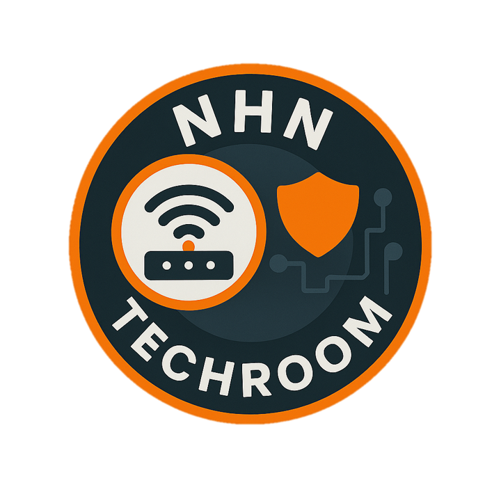

At NHN-TECHROOM, we simplify access to enterprise-grade network lab environments,
so you can focus on what matters — mastering real-world networking skills.
We provide high-performance, remote-access HPE Aruba lab rentals
designed for engineers,
students, and professionals preparing
for Aruba certification training.
Our labs are optimized for Aruba AOS8, AOS10, and Aruba CX switches,
giving you hands-on experience to practice Aruba wireless, wired, and security configurations.
Whether you're learning how to configure Aruba CX switches, testing real scenarios,
or preparing for professional exams,
our Aruba lab environments provide the practical experience
you need to
succeed.
Skip the hours of drag-and-drop setup. Access validated, real-world architectures including Aruba VSX switching fabrics, ClearPass integration, and Arista Leaf-Spine data center designs.
Need to simulate a specific client environment or a complex migration? Our team builds bespoke lab topologies tailored to your technical requirements, delivered on-demand based on our high-capacity server availability.
We don't just provide the "rack." Our experts offer targeted training sessions and guided walkthroughs on advanced topics like REST API automation, NAE (Network Analytics Engine), and multi-vendor interoperability.
No expensive hardware or local hypervisor issues. Access everything via a secure, high-speed Guacamole-powered gateway.
Our labs aren't just for passing exams; they are built to mirror the production challenges faced by Senior Network Consultants.
Leverage our massive resource pool to run large-scale topologies that standard home labs can't handle.